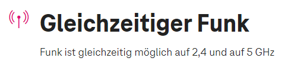

Ihr bringt einen neuen Router, der noch weniger kann als die vorigen, was schon schwer zu Toppen war. Aber was ihr jetzt auf den Kunden loslässt, grenzt schon an Dummheit. Man braucht eine App um zumindest WLAN einstellen zu können und man kann nun keinen eigenen Router dahinter anschließen, da selbst das nun gesperrt wurde. Was stimmt mit euch bitte nicht? Der Router muss ja extrem günstig gewesen sein, sodass ihr eure Milliarden Gewinne weiter erhöhen könnt. Und das beste und da bin ich mir 100% sicher, jetzt wo man nichts mehr einstellen kann, kann man auch am Support sparen, denn dieser wird weniger Anrufer bekommen, da man am Router ja nichts mehr einstellen kann und deswegen Fragen ausbleiben werden.
Wo bleibt die nur die Routerfreiheit in Österreich liebe RTR denn ihr könnt das umsetzen, aber das will man nicht, weil man lieber das Geld der Provider haben will.
Ein Test zu dem neuen Router, der eine Frechheit ist:
ich denke bzw. vermute, dass die neue Home Box Fiber mit kommenden Updates noch mehr Einstellmöglichkeiten bekommt. Ich dürfte das Gerät testen und habe viele Verbesserungsvorschläge, die jetzt aufkommen, gleich weitergeleitet. Lassen wir uns überraschen, was noch kommt.
aktuell wird die neue Home Net Box Fiber nur an Neukunden ausgegeben, die einen Gaming 300 oder einen Gigakraft 1000 Tarif bestellen. Ein Tausch für Bestandskunden ist aktuell nicht vorgesehen. Ich bin aber zuversichtlich, dass sich das noch ändern wird. Versprechen kann ich aber nichts.
vorerst gilt das nur für Neukunden. Sprich, wenn du als Bestandskunde mit einer Internet Fiber Box 2 auf einen Gaming 300 oder Gigakraft 1000 Tarif umsteigst, erfolgt kein automatischer Tausch auf die Home Box Fiber.
LG JD.
MMD
Ich kann nicht mal am WLAN irgendetwas ändern und muss es genau so hinnehmen wie ich es bekommen habe. Mit 0 Einstellmöglichkeiten. In der MyMagenta App geht gar nichts. Laut Technikhotline ist es halt im Moment so bei mir, da ein Modemwechsel durchgeführt wurde. Ich soll auf ein Update warten der irgendwann kommen soll.
was möchtest du gerne auf dem Modem ändern? Zähle gerne bisschen was auf. Ich leite das dann gern weiter.
LG JD.
Na zumindest mal den Namen und das Passwort vom WLAN. Wäre mal das absolute Minimum. Jetzt muss ich alle Geräte neu verbinden, da die alte SSID + PW eben nicht vergeben werden kann.
Mich nervt viel mehr die Art und Weise wie man in der Technikhotline kommuniziert. Hatte zwei mal das Vergnügen und beide male kannten sich die MA überhaupt nicht aus mit dem neuen Router und einer meinte sogar wegen meinem Problem: "Ja so ist es halt im Moment" und ich soll auf das Update warten der irgendwann im September oder Oktober kommen soll. Auf meine Frage ob ich eventuell eine Fritzbox bekommen kann da mein Router so stark kastriert ist und ich so Probleme habe kam die Antwort: "Nein, sie haben schon einen neuen Router." No na net, ich habe diese Probleme ja eben seit dem neuen Router.
was möchtest du gerne auf dem Modem ändern? Zähle gerne bisschen was auf. Ich leite das dann gern weiter.
LG JD.
Ich zähle ein paar Punkte für mich auf:
port forwarding für z. Bsp. VPN- u. Dedicated Server, etc.
DHCP statische IPv4-Adressvergabe anhand der MAC-Adresse
Änderung der DNS per DHCP
Deaktivierung des DHCP
Deaktivierung von UPnP und WPS
Bridge-Modus
Konfiguration von WLAN Bandbreite, Kanäle, IEEE 802.11 Standards, etc.
zeitliche Deaktivierung des WLAN
Eigentlich den status quo.
NTM
Ich möchte auch meine Beobachtungen zu dieser, in manchen Teilen des Internets sehr stark kritisierten, Home Fiber Box.
Von den technischen Daten ist die Home Fiber Box für das, was sie ist (ein Standardmodem) ziemlich gut.
Allerdings dürfte die Softwareseite recht kontrovers sein.
Was vielen sauer aufstoßen dürfte ist zum einen, dass die Box nur über die Mein Magenta App konfiguriert werden kann, da scheinbar keine Weboberfläche vorhanden ist. Sollte also jemand kein Smartphone oder Tablett besitzen, kann diese Person dieses Gerät nicht konfigurieren (zumindest nicht ohne die Hilfe einer weiteren Person). Sollte es außerdem Probleme mit der Mein Magenta App geben und das Produkt ggf. nicht richtig hinterlegt sein, kann auch mit dem richtigen Gerät die Konfiguration nicht angepasst werden.
Außerdem dürfte derzeit wohl noch keine Möglichkeit bestehen einen Anschluss mit dieser Box auf IPv4 umstellen zu lassen, um Portweiterleitungen und einen Bridge Mode nutzen zu können (sofern diese Funktionen überhaupt implementiert wären).
Generell stimme ich der Liste von
@Erebos
zu. Für mich wäre der Bridge Modus recht wichtig, da ich gerne meine eigene Hardware hinter dem Provider-Gerät betreibe und dabei keine Einschränkungen erfahren möchte. Allerdings nutzen viele auch nur das bereitgestellte Gerät, weshalb es durchaus sehr gerne gesehen wäre, wenn auch alle anderen Optionen der alten Fiber Box 1 & 2 auch auf der neuen Box implementiert werden.
modprobe
Zitat
Ich zähle ein paar Punkte für mich auf:
port forwarding für z. Bsp. VPN- u. Dedicated Server, etc.
DHCP statische IPv4-Adressvergabe anhand der MAC-Adresse
Änderung der DNS per DHCP
Deaktivierung des DHCP
Deaktivierung von UPnP und WPS
Bridge-Modus
Konfiguration von WLAN Bandbreite, Kanäle, IEEE 802.11 Standards, etc.
zeitliche Deaktivierung des WLAN
Eigentlich den status quo.
Selbe Situation hier. Ohne die oben genannten Punkte ist das Gerät für mich unbrauchbar. Zwar wurde kommuniziert, dass Power-User trotzdem die alten Geräte erhalten falls explizit gefordert, aber das ist keine Lösung und wird auch garantiert nach einiger Zeit nicht mehr möglich sein.
Und wer hat sich bitte gedacht es ist eine gute Idee, den Router über eine Cloud Lösung zu betreiben und nur über eine App konfigurierbar zu machen? Wie wir ja alle wissen ist die Cloud immer erreichbar und kann nicht gehackt werden /s.
IT-Freak
Anzeigen der Clients inkl. Status, Netzwerkports etc.
vergeben von Namen für Geräte, in kombination von statische DHCP leases
auslesen der Leitungswerte (inkl. History)
Cloud GUI - Damit es nicht nur über die APP geht.
lokale WebUI für Statusinformationen
vollständige lokale WebUI als Option, aktivierbar über die Cloud. (Mit dem möglichen Nachteil, dass die APP dann Funktionen verliert)
ändern der IP Adresse des Routers bzw. des Subnets
konfigurieren des Gästenetzwerks
WLAN Insight
DDNS
Erebos
vor 20 Stunden schrieb NTM:
Ich möchte auch meine Beobachtungen zu dieser, in manchen Teilen des Internets sehr stark kritisierten, Home Fiber Box.
Von den technischen Daten ist die Home Fiber Box für das, was sie ist (ein Standardmodem) ziemlich gut.
Allerdings dürfte die Softwareseite recht kontrovers sein.
Was vielen sauer aufstoßen dürfte ist zum einen, dass die Box nur über die Mein Magenta App konfiguriert werden kann, da scheinbar keine Weboberfläche vorhanden ist. Sollte also jemand kein Smartphone oder Tablett besitzen, kann diese Person dieses Gerät nicht konfigurieren (zumindest nicht ohne die Hilfe einer weiteren Person). Sollte es außerdem Probleme mit der Mein Magenta App geben und das Produkt ggf. nicht richtig hinterlegt sein, kann auch mit dem richtigen Gerät die Konfiguration nicht angepasst werden.
Außerdem dürfte derzeit wohl noch keine Möglichkeit bestehen einen Anschluss mit dieser Box auf IPv4 umstellen zu lassen, um Portweiterleitungen und einen Bridge Mode nutzen zu können (sofern diese Funktionen überhaupt implementiert wären).
Generell stimme ich der Liste von
@Erebos
zu. Für mich wäre der Bridge Modus recht wichtig, da ich gerne meine eigene Hardware hinter dem Provider-Gerät betreibe und dabei keine Einschränkungen erfahren möchte. Allerdings nutzen viele auch nur das bereitgestellte Gerät, weshalb es durchaus sehr gerne gesehen wäre, wenn auch alle anderen Optionen der alten Fiber Box 1 & 2 auch auf der neuen Box implementiert werden.
Das Modem hat eine Weboberfläche, aber diese ist deaktiviert. Weiße Seite mit Sprachauswahl links unten und ein animiertes kreisförmiges Icon in der Mitte. Kurz nach der Erstinbetriebnahme popt auch eine Fehlermeldung auf, die ein fehlerhaftes Laden der Sprache anzeigt. Ich gehe davon aus, dass eine Web-GUI aktiviert werden könnte, aber derzeit von Providerseite nicht gewünscht ist.
Youthman1987
Ich habe auch ein riesen Problem mit dem neuen Router.
Kann keine meiner Smarthome Geräte mehr verbinden da ich den Wlan Namen + pw nicht ändern kann.
Nach ca. 6 anrufen bei der Technik hotline hat mir der letzte Mitarbeiter gesagt das sie das Produkt zu früh auf den Markt gebracht habt. Da die Einstellungen auch in der Magenta app noch nicht funktionieren.
Ich soll Bitte Geduld haben.
Das ist doch echt ein Witz…..
IT-Freak
Technische Lösung, schnell im Internet irngedwo günstig einen WLAN AP holen und dann ist das Problem vorübergehend gelöst.
...
Aber ja, eigentlich sollte das Produkt funktionieren wenn es am Markt kommt.
AxelS
Am 2.9.2022 um 18:01 schrieb Youthman1987:
Ich habe auch ein riesen Problem mit dem neuen Router.
Kann keine meiner Smarthome Geräte mehr verbinden da ich den Wlan Namen + pw nicht ändern kann.
Nach ca. 6 anrufen bei der Technik hotline hat mir der letzte Mitarbeiter gesagt das sie das Produkt zu früh auf den Markt gebracht habt. Da die Einstellungen auch in der Magenta app noch nicht funktionieren.
Ich soll Bitte Geduld haben.
Das ist doch echt ein Witz…..
und funktioniert zwischenzeitlich alles in der Magenta App?
Bearbeitet
von AxelS
humanstew
Am 9/1/2022 um 16:21 schrieb Erebos:
Ich zähle ein paar Punkte für mich auf:
port forwarding für z. Bsp. VPN- u. Dedicated Server, etc.
DHCP statische IPv4-Adressvergabe anhand der MAC-Adresse
Änderung der DNS per DHCP
Deaktivierung des DHCP
Deaktivierung von UPnP und WPS
Bridge-Modus
Konfiguration von WLAN Bandbreite, Kanäle, IEEE 802.11 Standards, etc.
zeitliche Deaktivierung des WLAN
Eigentlich den status quo.
+1
bogec
Am 10/13/2022 um 9:34 AM schrieb AxelS:
and is everything working in the Magenta app in the meantime?
Nein, nur die SSID und das Passwort ändern
AxelS
Am 22.10.2022 um 10:13 schrieb bogec:
Nein, nur die SSID und das Passwort ändernder mir
bei uns geht nicht mal das
Youthman1987
vor 5 Minuten schrieb AxelS:
bei uns geht nicht mal das
meld dich bei der Hotline.
hatte das auch.
die haben dann meinen Router noch einmal getauscht (selbes Model)
dann ging es!
AxelS
vor 5 Minuten schrieb Youthman1987:
meld dich bei der Hotline.
hatte das auch.
die haben dann meinen Router noch einmal getauscht (selbes Model)
dann ging es!
Bereits erfolgt, ebenso drei Anrufe bei der Hotline mit dem Versprechen das die Software aktualisiert wird und dann alles geht. Leider bisher ohne Erfolg
Youthman1987
Bei mir hat es 7 anrufe gebraucht. Ohne Erfolg.
nach 2 Wochen haben die mich angerufen.
Bernd1602
Hallo zusammen ! Ist es möglich, dass die neue Fiber Box standardmässig im 5 GHz -Bereich arbeitet ? Das wäre nämlich SUPER da ich einige Geräte habe, welche zwingend 2,4 GHz benötigen und ich sie daher nicht verwenden kann ?!
D_S
Mir würde bereits "Gäste Wlan einstellen" als zusätzliches Feature reichen. Es ist mir ein absolutes Rätsel warum dies ebenfalls gestrichen wurde (abgesehen von den Features für Power-User).
Außerdem war die Einrichtung über die App eine Katastrophe. Habe den mitgelieferten QR-Code gescannt und bin dann gleich zur "Einrichtungsseite" in der App gekommen. Alles durchgemacht und zum Schluss auf "WiFi Einstellungen durchführen" geklickt. Leider passierte danach nichts und es wurde nur eine weiße Google-Seite aufgerufen.
Habe danach den Support angerufen und die freundliche Dame war leider komplett ratlos. Einziger Tipp: Handy neu starten.
Brachte natürlich überhaupt nichts.
Meine Lösung:
Habe mich aus der App ausloggen müssen und extra in den Account für das Festnetzinternet einloggen. Dachte immer es geht beides automatisch in der App. Nach erfolgreicher Einstellung wollte ich natürlich meinen Handy-Tarif hinzufügen, aber das funktioniert leider nicht.
Jetzt musste ich wieder zum Handy-Login wechseln, weil ich diesen öfters nutze. Das wird wohl ein Thema für einen anderen Thread sein.
felbfa
Habe heute auch 1 Stunde lang versucht eine 2,4Ghz Wifi Lampe in mein Smarthome zu integrieren. Durch Recherche bin ich dann darauf gestoßen das es überhaupt nicht möglich ist die beiden Frequenzbänder zu trennen.
Ich bin echt fassungslos wie dieser Router veröffentlicht werden konnte. Habe mir beim Kauf nicht großartig Gedanken gemacht, da ich es niemals für möglich gehalten habe das Features die schon seit 10 Jahren Standard sind einfach so gestrichen werden.
Ich bin echt enttäuscht von der T-Mobile Austria GmbH und habe auch kaum Hoffnung, dass diverse Features nachgereicht werden.
Bleibt einem wohl nur der Gang zur Konkurrenz...
Erebos
"Bleibt einem wohl nur der Gang zur Konkurrenz..." Nicht zwangsläufig. Magenta unterscheidet zwischen DAUs und Power-Usern. Offenbar gehörst Du zur zweiten Gruppe. Ich hatte alle drei Modem-Typen daheim (Fiber-Box I, II, Home Box Fiber, siehe mein Bericht) und war nur mit dem ältesten Gerät zufrieden. Auf Wunsch bekommst Du, abhängig von deinem Vertrag, die Fiber-Box I zugesendet (kann bis 600 MBit/s).
Bearbeitet
von Erebos
BrunoK
Ihr bringt einen neuen Router, der noch weniger kann als die vorigen, was schon schwer zu Toppen war. Aber was ihr jetzt auf den Kunden loslässt, grenzt schon an Dummheit. Man braucht eine App um zumindest WLAN einstellen zu können und man kann nun keinen eigenen Router dahinter anschließen, da selbst das nun gesperrt wurde. Was stimmt mit euch bitte nicht? Der Router muss ja extrem günstig gewesen sein, sodass ihr eure Milliarden Gewinne weiter erhöhen könnt. Und das beste und da bin ich mir 100% sicher, jetzt wo man nichts mehr einstellen kann, kann man auch am Support sparen, denn dieser wird weniger Anrufer bekommen, da man am Router ja nichts mehr einstellen kann und deswegen Fragen ausbleiben werden.
Wo bleibt die nur die Routerfreiheit in Österreich liebe RTR denn ihr könnt das umsetzen, aber das will man nicht, weil man lieber das Geld der Provider haben will.
Ein Test zu dem neuen Router, der eine Frechheit ist:
Habe heute auch 1 Stunde lang versucht eine 2,4Ghz Wifi Lampe in mein Smarthome zu integrieren. Durch Recherche bin ich dann darauf gestoßen das es überhaupt nicht möglich ist die beiden Frequenzbänder zu trennen.
Bekommst du bei der Suche keine 2 unterschiedliche SSID also WLAN Netzwerke angezeigt? 1 müsste das 2,4 GHz und das 2 das 5 GHz Frequenzband aussenden.
LG
Rexalius
felbfa
Nein bekomme leider nur eine SSID angezeigt.
Benni1801
Volle Zustimmung für meine Vorredner, habe heute bereits ein Gespräch mit dem Support gehabt, der aber auch nicht unbedingt hilfreich war. Ich kann weder mein Passwort ändern noch den WLAN Namen, kann keine Ports öffnen… nichts. Das kann doch wohl nicht ernst gemeint sein. Bin seit zwei Tagen Kunde und bereue es heute schon, der Zugriff über die IP mit einem Webinterface der Vorgängermodelle muss doch wohl das Mindeste sein. Und wenn es tatsächlich um die Entlastung des Supports geht, wäre doch eine Freischaltung der Features auf Anfrage die beste Lösung.
wie du den Netzwerknamen und das Passwort ändern kannst, steht
hier
. Weitere Features werden mit kommenden Updates implementiert.
LG JD.
Benni1801
Bis Self Service komme ich und dort ist aber Schluss, in der Kategorie kann ich nur den Vertrag umbenennen...
Also ich hab ja schon viel schlechtes gehört über andere Anbieter, aber sowas ist schon sehr mühsam, wobei die App an sich gar nicht das Problem ist, würde sie zumindest funktionieren. Alles in allem ein sehr enttäuschender Einstieg bei Magenta, hätte mir vom vermeintlichen Marktführer da schon zumindest die Standards erwartet die sämtliche Konkurrenten bieten, nein die eigentlich die Minimalanforderungen an einen Router/ Modem sind.
wenn du bei der Home Box Fiber, die oben beschriebenen Änderungen nicht machen kannst, lass mal von unserem Technikteam prüfen, ob du vielleicht ein neues Modem brauchst. Soweit ich informiert bin, gab es da eine Charge mit einer Firmware die nicht ganz mit der Mein Magenta App kompatibel war. Der Tausch wäre auch kostenfrei.
wenn du bei der Home Box Fiber, die oben beschriebenen Änderungen nicht machen kannst, lass mal von unserem Technikteam prüfen, ob du vielleicht ein neues Modem brauchst. Soweit ich informiert bin, gab es da eine Charge mit einer Firmware die nicht ganz mit der Mein Magenta App kompatibel war. Der Tausch wäre auch kostenfrei.
LG JD.
Tja wir haben das Problem seit einem Monat, technikhotline antwortet mit der Info das es weitergeleitet wird, ein modemtausch würde nichts bringen und wird daher abgelehnt.
Jonathan Dorian
vor 17 Stunden schrieb AxelS:
Tja wir haben das Problem seit einem Monat, technikhotline antwortet mit der Info das es weitergeleitet wird, ein modemtausch würde nichts bringen und wird daher abgelehnt.
Man sieht es gleich anhand der MAC Adresse, ob es nicht die alte Charge ist. Melde dich bitte via PN auf Facebook oder Insta. Meine Kolleg*innen können dir bestimmt weiterhelfen.
LG JD.
AxelS
vor 7 Stunden schrieb Jonathan Dorian:
Man sieht es gleich anhand der MAC Adresse, ob es nicht die alte Charge ist. Melde dich bitte via PN auf Facebook oder Insta. Meine Kolleg*innen können dir bestimmt weiterhelfen.
LG JD.
Wäre ja toll wenn die technikhotline diese Info auch hätte dann würd ich nicht seit nem Monat auf Antwort warten
Jonathan Dorian
vor 16 Stunden schrieb AxelS:
Wäre ja toll wenn die technikhotline diese Info auch hätte dann würd ich nicht seit nem Monat auf Antwort warten
Die Infos liegen intern auf. Kannst du ruhig darauf hinweisen und fragen.
LG JD.
manistoff
Hallo Liebe Magenta Community!
Bin neue hier
Finde es sehr interessant.
Habe mir auch die Neue Home Box Fiber geholt,
Leider bietet Sie noch nicht gute Einstellungsmöglichkeiten.
Darum meine Frage: Weiß man schon vielleicht wann es ein neues Update für das Modem kommt, oder kommen wird?!
Danke.
LG
Mani
AxelS
Am 11.11.2022 um 08:49 schrieb Jonathan Dorian:
Die Infos liegen intern auf. Kannst du ruhig darauf hinweisen und fragen.
LG JD.
Modem wurde heute geliefert, PROBLEM besteht weiterhin. Aussage an der technikhotline „das klappt noch nirgendwo“ sie können gern wieder ein weißes Modem haben.
Langsam fühl ich mich verar***
Youthman1987
vor 5 Minuten schrieb AxelS:
Modem wurde heute geliefert, PROBLEM besteht weiterhin. Aussage an der technikhotline „das klappt noch nirgendwo“ sie können gern wieder ein weißes Modem haben.
Langsam fühl ich mich verar***
hat bei mir auch ein paar std. Gedauert.
war auch sauer.. aufeinmal gings dann.
D_S
Habe gerade versucht einen bestehenden SmartHome-Hub wieder einzubinden, jedoch ohne Erfolg. Bin draufgekommen, das dieser nur mit 2,4GHz kommunizieren kann. Dachte zuerst ich könnte an der neuen Home Fiber Box 5GHz ausschalten, aber nein! Nichts möglich!
Erst nach Recherche im Forum musste ich feststellen, dass man die Frequenzen nicht getrennt nutzen kann. Bis jetzt waren mir die Einschränkungen noch relativ egal, aber das ist einfach nur eine Katastrophe.
Liebes Magenta-Team, wenn ich so etwas online lese:

Dann gehe ich auch davon aus, dass beide Kanäle nutzbar sind! Nirgendwo wird erwähnt, dass man nur 5GHz nutzen kann!
Man sollte mal bei beim Konsumentenschutz nachfragen, ob es sich hier nicht um Kundentäuschung handelt!
Ich fühle mich richtig über den Tisch gezogen! Ich habe wirklich gehofft das mit dem Modem-Tausch wieder alles einfach funktionieren wird, aber dem scheint nicht so.
Welche Möglichkeiten habe ich jetzt?
Kann ich kostenlos auf die Fiber Box 2 umsteigen?
Würde euer Magenta-Mesh das Problem lösen? Kann ich mir dann zumindest 2,4Ghz für die Einrichtung aussuchen?
Falls nein --> Wie kann ich ohne Zusatzkosten vor Ablauf der MVD aus dem neuen Vertrag aussteigen?
otschi
Am 13.10.2022 um 09:34 schrieb AxelS:
und funktioniert zwischenzeitlich alles in der Magenta App?
nein, heute in Betrib genommen, ssid und passwort kann nicht geändert werden, und keine Konfigurationsmöglichkeiten über den pc ist doch ohnehin ein Schertz oder?
Gibt es denn hier immer noch keine Lösung? Habe wegen einem neuen Vertrag an anderer Adresse ein neues Modem bekommen und krieg nun meine NAS nicht mehr zu laufen (kein Reverse Proxy, kein VPN etc.). Ich dachte mir, dass die NAS zumindest über UPnP die Ports konfigurieren könnte, aber nicht mal das geht. Double NAT über die Mesh Router funktionioniert auch nicht. Es ist eine Schande, was Magenta hier mit dem Modem abliefert. Ich hoffe, ich kann das Modem irgendwie tauschen.
Bearbeitet
von reset
D_S
vor 2 Minuten schrieb reset:
Gibt es denn hier immer noch keine Lösung? Habe wegen einem neuen Vertrag an anderer Adresse ein neues Modem bekommen und krieg nun meine NAS nicht mehr zu laufen (kein Reverse Proxy, kein VPN etc.). Ich dachte mir, dass die NAS zumindest über UPnP die Ports konfigurieren könnte, aber nicht mal das geht. Double NAT über die Mesh Router funktionioniert auch nicht. Es ist eine Schande, was Magenta hier mit dem Modem abliefert. Ich hoffe, ich kann das Modem irgendwie tauschen.
Leider immer noch keine Lösung.
Du kannst das Modem gegen ein älteres tauschen. Blieb mir als einzige Möglichkeit, damit mein Smarthome wieder funktioniert. Bin jetzt aber die nächsten 2 Jahre durch den Tarif gebunden. Danach sieht mich Magenta nie wieder!
otschi
Ich habe zuerst bei der servicline angerufen welche mir zu meiner Überraschung erzählt hat das der bridge mode möglich ist und sie mich auf ipv4 umstellen, danach hatte ich zwar gar nicht gefragt aber ok gegen ipv4 habe ich nichts
Es hieß das wird 24 bis 48h dauern
Resultat: nachdem ich auf ipv4 umgestellt war gab es immer noch keine Möglichkeit den Router in den bridge mode zu versetzen, die ssid zu ändern, das passwort zu ändern oder 2,4Ghz bzw. Ein zweites wlan auf zu machen
Da es bereits nach 18:00 war habe ich dann mein Glück bei der Technik Hotline probiert da die bis 22:00 erreichbar ist. Und endlich konnte ich mit jemandem kompetenten reden, router tausch gegen das Vorgänger Modell wurde für den nächsten Tag vereinbart und ich sollte dann nochmal anrufen um die Einstellungen ändern zu lassen.
Routertausch ging Problemlos und siehe da eine web Oberfläche zur Konfiguration, zumindest lässt sich jetzt mal die ssid und das passwort anpassen und ein Gäste Netzwerk einrichten, mehr ist in der Oberfläche aber nicht möglich.
Nach dem anschließenden erneuten Telefonat, es hat wieder geheißen bridge mode geht nur mit ipv4 nach etwa 1h ist die sms gekommen das die Änderungen abgeschlossen sind, und siehe da eine komplett andere weboberfläche, nachdem ich herausgefunden hatte dass ich deshalb nicht mehr in das webinterface komme weil dieses jetzt nur noch unter edge läuft.
Bridge mode lässt sich darin aktivieren und nach einem kurzen check meiner ip kann ich auch noch sagen das ich nicht hinter einem provider nat stehe
Das ganze war mühsamer als es klingt, aber ich würde auf keinen Fall den aktuellen Router nehmen, dadurch das sich nicht einmal ssid und passwort ändern lassen ist das ganze meiner Meinung nach sogar ein it Sicherheitsrisiko, immerhin ist bei einer standard ssid die Annahme naheligend dass auch das passwort unverändert ist bei 12 stellen und nur kleinbuchstaben und den ziffern 1 bis 9 ist das sogar für eine bruteforce attake angreifbar
reset
Also die SSID konnte ich mit dem schwarzen Router schon einstellen, aber ohne Bridge Mode, ohne Port Forwarding oder automatisches UPnP (eines davon würde mir ja reichen) klappt nichts. Habe angerufen, ich kriege ein anderes Modem.
BlueRedWhite
Die neue Box ist die reine Katastrophe. Dass es kein Webinterface gibt ist das eine, dass man nach mehreren Monaten als einzige Einstellung immer noch nur den "Vertrag umbenennen" kann, ist das andere(wer braucht das / wer nutzt das). Dass sich die Netze für 2,4GHz und 5Ghz nicht mehr trennen lassen und man im unglücklichen Fall zwischen den Netzen ständig hin- und hergebucht wird (mit entsprechenden dauernden Verbindungsausfällen versteht sich), ist da schon sehr ärgerlich. Aber dass man mit einem neuen iPad Pro nur mit dem seit 2004 veralteten WLAN Sicherheitsprotokoll WEP mit dem Router verbunden wird, ist eine schweres Foul und hochgradiges Sicherheitsrisiko. Auch dies kann man nicht wirklich beeinflussen. Dass man nicht sieht, wer sich in seinem WLAN-Netz eingebucht hat, und was derjenige tut, sein nur nebenbei erwähnt. Als "Dienstanbieter", der man mit einem (mehr oder weniger offenem) WLAN-Netz automatisch wird, muss einen das ja auch nicht unbedingt interessieren. Wie es da künftig mit der Haftung und Nachweismöglichkeit ausschaut sei dahingestellt. Wo das ganze noch hinführen soll, weiß keiner.
Der Bridge Modus wird nicht mehr angeboten, weil ihn nur 2,3% der User nutzen. Wieviel User nutzen die Funktion "Vertrag umbenennen"? Une ist das echt der einzige Fortschritt?
tildm
Gibt es hier schon ein Update bezüglich des Webinterfaces des Routers?
Ich hab meinen alten Fiber box 2 Router gegen den neuen Home box Fiber getauscht (wusste vorher nicht dass der neue solche Probleme verursacht). Nun verlieren einige Wlan Geräte andauernd die Verbindung bzw. man muss das Gerät immer neu mit den Wlan verbinden (TV,Smart Home usw.). Da man beim neuen Router nichts einstellen kann, ist das extrem nervig. Hoffe es gibt bald ein Update damit man wieder ein Webinterface wie bei jedem anderen Router hat.
johannes1
Hi,
Muss auch mal kurz meinen Frust rauslassen: Ich war auch sehr überrascht als ich die neue Box bekommen habe und es kein Interface für standard Konfigurationenen, wie oben schon aufgezählt, gab. Vor allem verstehe ich nicht ganz den extra Aufwand den sich Magenta antut, für die Kunden die dann doch
Einstellungen ändern wollen. Da muss beim Magenta im Service Center extra ein Ticket erstellt werden um z.B. das Modem im Bridge Modus verwenden zu können.
Bin auch stark für das bewärte Webinterface...für die Kunden die sich nicht so gut auskennen, kann Magenta ja die komplett nutzlose App behalten, aber bitte gebt uns das Webinterface zurück!
pootch
Zum Thema Fiber-Box...
Für 98% der Kunden wird das wohl komplett ausreichend sein.
Ich stand allerdings (gehöre zu den anderen 2%) auch vor ähnlichen Problemen. Tarif umgestellt und diesen Drecks-Router bekommen..
Wenn das Teil nur ein Modem wäre das man hinter einem Router betreiben kann, wäre ich ja schon zu frieden. Aber ohne Support geht hier gar nichts mehr.
So nun zum Protipp: Magenta hat (bzw. hatte) Fritzbox Cable 6660. Diese hab ich mir geholt über den Magenta Support und mein IP von IPv6 auf IPv4 static umstellen lassen.
Die Fritzboxen sind an sich ok, wenn man es nicht übertreiben will mit Smarthome. Es gibt nur einen kleinen Hacken an der Fritzbox von Magenta.. Updates kommen sehr sehr verspätet. Selber Updaten ist nicht drinnen. Alle andere Funktionalitäten sind gegeben. (Port Forwarding, Smarthome etc..)
{kind=link}